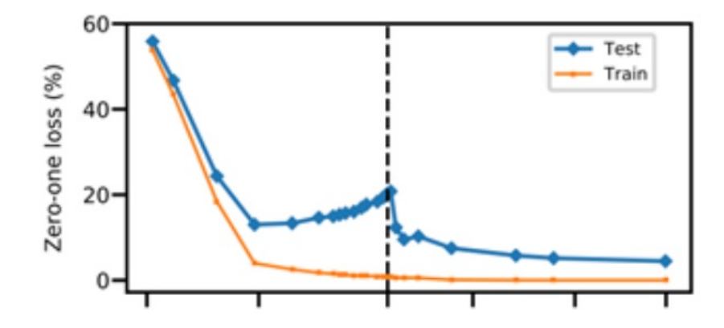
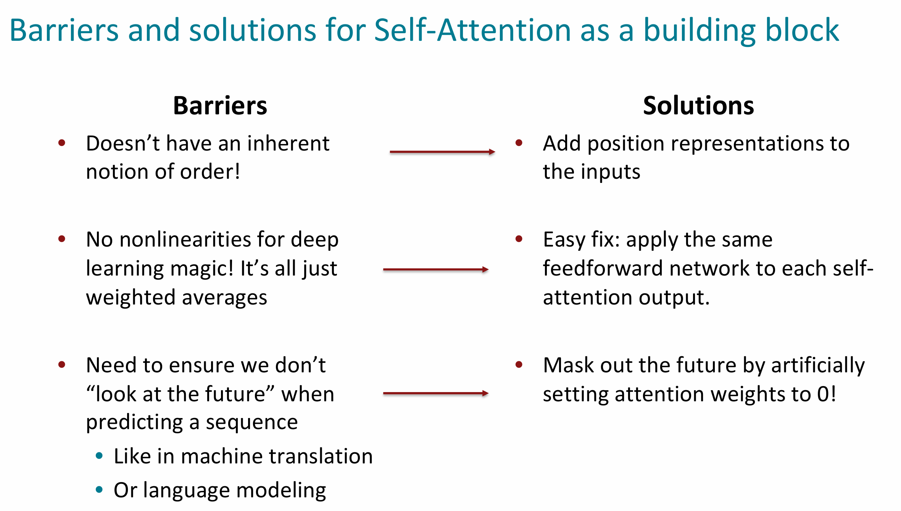

一些比较过时的内容，但也可以说是当代 NLP 的基石。
随笔 1：正则化的变迁
- 我们有很多参数的模型。 一个完整的损失函数包括所有参数的正则化，例如 L2 正则化。
- 机器学习时代：当我们有很多特征时，正则化可以防止过拟合；
- 大模型时代：当我们有一个大模型时，正则化产生的模型可以很好地泛化；
- 我们不在乎我们的模型在训练数据上过拟合， 即使他们非常过分，因为：

随笔 2：基础概念
- 权重初始化：通常在神经网络中，我们会将权重初始化为较小的随机值，而不是零矩阵。原因是，使用零值初始化会导致对称性问题；
- 优化器（Optimizers）：
Adagrad是最简单的自适应优化器之一，它会根据各个参数的历史梯度来调整每个参数的学习率；Adam是一种常用且表现较好的优化器，它结合了 RMSprop 和动量（momentum）更新的优点；
随笔 3：“语言建模”（Language Modeling）
- 任务定义：语言建模的任务是预测下一个词。比如句子“The students opened their ______”，一个语言模型的目标就是去预测填入这个空格的词语。可能的答案可以是“books”“laptops”等等。
- 形式化定义：给定一个单词序列 ，语言模型会计算下一个词 的概率分布 。简单来说，这个模型要基于上下文来预测接下来的单词的可能性。
- 模型的应用：这样的模型可以理解为给一段文字分配一个概率，这样便能根据其可能性评估该段文字。例如，句子 “The cat sat on the mat” 有一个概率 ，用来表征该段文本出现的自然程度。
-
过去的语言模型都用的是 “n-gram 词袋模型”，假设当前单词仅由前 n 个词决定，感觉有点落后了。
- 上下文限制：n-gram 模型仅考虑固定数量的前 n 个词，这使得它无法捕捉到更长的上下文信息。许多语言现象需要更广泛的上下文才能正确理解，比如歧义、长距离依赖关系等。
- 稀疏性问题：随着 n 的增加，可能的 n-gram 组合数量会迅速增长，导致模型在训练数据中遇到许多未见过的组合（即稀疏性问题）。这使得模型难以泛化到新数据上。
- 缺乏语义理解：n-gram 模型通常依赖于表面形式的统计特征，而忽略了词汇之间的语义关系。它们无法捕捉同义词、反义词等语义信息。
-
RNN 呢？序列模型，梯度消失，很难学会在许多时间步长中保留信息。
-
LSTM 缓解了问题，但序列模型就是慢。
-
我们为什么应该关心语言建模？
- 语言建模是一项基准任务（Benchmark），可帮助我们衡量预测语言使用的进展 ；
- 语言建模是许多 NLP 任务的子任务，尤其是那些涉及生成文本或估计文本概率的任务；
第八讲：Transformer 基础
我们需要的构建模块：自注意力机制（self attention） —— 为了生成 ，我们需要关注 。
假设 是词汇表 中的一系列单词，比如 “Zuko made his uncle tea”（祖寇给他叔叔泡茶）。
对于每个单词 ，定义 ，其中 是一个嵌入矩阵。
-
使用权重矩阵 Q、K、V 变换每个单词的嵌入，其中 Q、K、V 都在 的空间中：
（查询向量） （键向量） （值向量）
-
计算键和查询向量之间的相似度并使用
softmax归一化。， 𝜶_{i,j} = \frac{exp(𝒆_{i,j})}{∑_j exp(𝒆_{i,j})}；
-
计算每个单词的输出，作为值向量的加权和：
自注意力机制作为构建模块的难点与解决方案

多头自注意力机制提高了计算效率
现在我们用多头自注意力机制代替了自注意力机制，来看两个优化技巧：1. 残差连接（Residual Connections）；2. 层归一化（Layer Normalization）。在大多数 Transformer 图中，这些通常写成“Add & Norm”。
层归一化是一种帮助模型更快训练的技巧。其核心思想是通过对每一层进行归一化，调整隐藏向量的均值和标准差，减少无意义的波动。
Transformer 的编码器-解码器结构
回顾一下，在机器翻译中，我们使用双向模型处理源语言句子，并用单向模型生成目标语言句子。
在解码器中，注意力机制类似于我们之前看到的结构。
- 设 为 Transformer 编码器的输出向量；
- 设 为 Transformer 解码器的输入向量，
- 键和值从编码器中获得（类似于记忆）：。
- 查询向量从解码器中获取，。
Transformer 需要改进的地方是什么？
自注意力机制的计算复杂度是二次的！！！
- 计算所有的交互对，使得计算量随着序列长度成二次增长！而在循环神经网络中，计算量仅为线性增长！
- 然而，随着 Transformer 规模增大，越来越多的计算量发生在自注意力机制之外，尽管自注意力的计算量是二次增长。在实际中，几乎所有大型 Transformer 语言模型都依赖这种二次复杂度的注意力机制。
Lecture 9: Pretraining
预训练革命是指预训练模型在自然语言处理领域带来的重大变革。预训练模型直接用互联网上的各种信息进行训练，得到一个模型基座（Foundation Model），再通过微调的方式将该模型适应到各种子任务上。这样做的好处是：
- 处理大规模、多样化的数据集：预训练模型能够处理互联网上的大规模、多样化的数据集。
- 无需标记数据：由于预训练不依赖于标记数据，这使得模型能够扩展到更大的规模。
- 计算效率：预训练模型需要在计算上进行优化，以适应大规模数据的处理，Transformer 支持并行化。
The byte-pair encoding algorithm
这是一种在自然语言处理（NLP）中用于处理词汇以下级别的结构的方法，也就是我们所说的子词建模。
BPE 是一种简单而有效的子词词汇构建策略，它的基本步骤如下：
- 初始化词汇表：开始时，词汇表只包含字符和一个表示单词结束的符号（如
</w>）。 - 寻找最常见的字符对：在给定的文本语料库中，找出最常见的相邻字符对，例如“th”或“he”。
- 添加为子词并替换：将这个字符对添加到词汇表中，并在文本中将这对字符替换为一个新的子词。例如，如果“th”是最常见的字符对，我们就将其添加为一个子词，并在所有出现“th”的地方替换它。
- 重复直至达到期望的词汇表大小：重复上述过程，直到词汇表达到我们设定的大小。
然而，这种编码方式并没有兼顾到单词的上下文。“一个词的完整意义总是依赖于上下文的，任何脱离完整上下文的意义研究都不能被认真对待。” 使用预训练的词嵌入（如 word2vec 或 GloVe）捕捉了词的分布特性，但不包含上下文信息。这意味着每个词都被赋予了一个固定向量，无论它出现在哪个句子或上下文中，这个向量都是相同的。
这种方法面临的挑战包括：
- 训练数据的局限性：为了教会模型语言的所有上下文方面，我们需要大量的下游任务训练数据（例如问答任务）。
- 随机初始化的参数：网络中的大多数参数都是随机初始化的，这意味着模型需要从零开始学习语言的复杂性。
假设我们有一个句子：“电影很好看。” 如果我们使用没有预训练的模型，电影这个词的嵌入是固定的，不随上下文变化。但是，如果我们使用预训练的模型，它需要能够根据整个句子的上下文来调整“电影”这个词的表示（哪个电影？）。
但在现代 NLP 中，几乎所有的参数都是通过预训练来初始化的。这意味着，我们不再从随机初始化开始训练模型，而是使用预训练模型作为起点，这有助于我们更快地收敛到一个好的解决方案，并且能够更好地捕捉语言的复杂性。
Pretraining for three types of architectures
编码器通常用于理解文本，并且能够捕捉到双向的上下文信息，我们可以用填空的方式去构建预训练模型的任务。提出了一个创新的想法：Masked Language Model（MLM）。这种方法的核心思想是：在输入序列中，随机选择一定比例的词，并用一个特殊的 [MASK] 标记替换这些词。然后，训练模型来预测这些被掩盖的词。
Devlin et al., 2018 proposed the “Masked LM” objective and released the weights of a pretrained Transformer, a model they labeled BERT. Some more details about Masked LM for BERT:
- Predict a random 15% of (sub)word tokens.
- Replace input word with [MASK] 80% of the time.
- Replace input word with a random token 10% of the time.
- Leave input word unchanged 10% of the time (but still predict it!)
Pretraining is expensive and impractical on a single GPU, BERT was pretrained with 64 TPU chips for a total of 4 days (TPUs are special tensor operation acceleration hardware). Finetuning is practical and common on a single GPU: **“Pretrain once, finetune many times.”**
Limitations of pretrained encoders
尽管预训练编码器（encoders）在许多NLP任务上表现出色，但它们并非万能的，出于以下原因限制：
- 自回归生成的限制：
- 预训练编码器，如BERT，通常不直接用于生成序列，因为它们不是为自回归（autoregressive）生成设计的。自回归生成意味着模型在生成序列时是逐词进行的，每个词的生成依赖于之前生成的词。
- 缺乏未来上下文：
- 编码器在处理输入时只能看到过去的上下文，而不能利用未来的词。这对于生成任务来说是一个限制，因为在生成新词时，Encoder 模型需要考虑到未来的上下文信息。
Extensions of BERT A takeaway from the RoBERTa paper: more compute, more data can improve pretraining even when not changing the underlying Transformer encoder.
Pretraining encoder-decoders: what pretraining objective to use?
编码器-解码器模型是一种常用于序列到序列任务（如机器翻译）的神经网络架构。这种模型包含两个部分：编码器和解码器。编码器处理输入序列并生成上下文表示，而解码器则基于这个表示训练整个模型。
预训练过程可以描述为以下步骤：
- 编码器处理输入：编码器处理整个输入序列 *，并生成一系列隐藏状态 .
- 解码器预测输出：解码器接收编码器的输出，并尝试基于部分输入和之前预测的词，预测输出序列
T5（Text-to-Text Transfer Transformer）是 Raffel 等人提出的一个预训练模型，他将 Span Corruption 作为训练目标。当一部分输入被 masked 时，模型必须依赖于剩余的上下文来预测缺失的部分，这促使模型捕捉到更丰富的语言特征。T5模型的一个优秀的特性： 它能够在广泛的开放领域问题上微调，并且能很好地检索其参数知识。
Pretraining decoders
- Language models! What we’ve seen so far.
- Nice to generate from; can’t condition on future words.
- All the biggest pretrained models are Decoders.
Decoder 的任务本质上就是在最后一个单词的 hidden state 上做分类任务！ 只不过作为一个语言模型，这个分类任务是在词表上做的，最终 Decoder 可以作为一个 Generator 学会如何根据给定的上下文预测下一个词的概率分布，生成连贯且语法正确的文本序列。
代表作：Generative Pretrained Transformer (GPT)，GPT模型是第一个大规模预训练的Transformer解码器，使用了12层的Transformer Decoder结构，拥有1.17亿个参数。
GPT-3, In-context learning, and very large models
GPT-3 是 OpenAI 开发的一种非常大的语言模型，它不仅在规模上超越了以往的模型，而且在能力上也展现出了新的特性，特别是上下文学习的能力——这意味着，通过在输入中提供一些示例，GPT-3 能够理解并执行特定的任务。
这揭示了预训练模型的两种互动方式：
- 采样：我们可以从 GPT-3 定义的概率分布中采样，提供提示（prompt）来生成文本。
- 微调：我们可以微调 GPT-3 来关注特定的任务，并获取其预测。
Why scale? Scaling laws
在自然语言处理和机器学习领域，模型规模的扩大通常会导致模型性能的提升。以下是扩大模型规模的一些原因：
- 更强的表示能力：更大的模型拥有更多的参数，这使得它们能够捕捉和学习更复杂的模式和表示。
- 更好的泛化能力：大规模模型往往能够更好地泛化到未见过的数据上，因为它们拥有更丰富的知识库。
- 更高的数据效率：大规模模型通常能够更有效地利用数据，因为它们能够从大量的参数中学习到更一般化的特征。
Scaling Laws 随着模型规模和数据规模的增加，模型的性能通常会提高 — — 这通常被称作是 Pre-Scaling Laws.
Scaling Efficiency: how do we best use our compute
尽管GPT-3的规模很大，但这并不意味着它是最优的参数和数据量组合。在有限的计算资源下，需要在模型的参数数量和训练数据量之间找到平衡。有时候，一个较小的模型在较少的数据上训练可能比一个较大的模型在更多的数据上训练更有效。这是因为较小的模型可能更容易训练，并且能够更快地收敛。
Security and Membership Inference
\Membership Inference Attack 展示了两个模型：一个目标模型（Target Model）和一个攻击模型（Attack Model）。
- 目标模型（Target Model）：
- 这个模型是攻击者想要推断其训练数据的模型。它接收输入数据（data record），并输出对应的类别标签（class label）。目标模型的预测结果（prediction）是基于其训练数据集学习到的模式。
- 攻击模型（Attack Model）：
- 攻击模型的目的是预测给定的数据记录（data）是否属于目标模型的训练集。
- 攻击模型输出一个标签（label），这个标签指示输入数据是否是目标模型训练集的一部分；
- 预测流程：
- 当攻击者拥有一个数据点时，他们首先使用目标模型进行预测。
- 然后，攻击者使用攻击模型来预测这个数据点是否是目标模型训练集的成员。